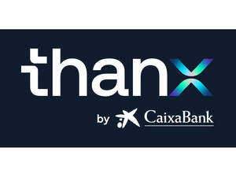

Trade Mark Journal No.2025/044 31 October 2025
UK00004282850 23 October 2025 (9,36)

International priority date claimed: 2 June 2025
(European Union Intellectual Property Office (EUIPO))
(019196443)
- Class 9
- Software in relation to finance and investment; software to evaluate and calculate financial and investment data; downloadable electronic publications relating to financial ratings and financial valuations, financial information, and investment information.
- Class 36
- Financial advisory services; Financial services; Financial research; Financial analysis and provision of financial reports; Financial assistance; Provision of online financial information; Financial management; Financial and monetary services; Financial assessment of corporate creditworthiness; Financial consultancy; Financial evaluation [insurance, banking, real estate]; Financial estimates; Financial assessments for reinsurance; Financial guarantees [surety services]; Financial information; Financial investments; Advisory services related to financial loans; Financial management, administration and valuation services; Financial planning and investment advisory services; Financial services for the provision of credit; Financial transaction services, namely facilitation of secure commercial transactions and payment options; Financial transfer and transaction services, payment services; Valuation and appraisal services; Financial planning services; Financial analysis; Economic and financial analysis; Business-related financial services; Investment-related financial services; Mutual fund investment; Financial advisory and management services; Wealth management-related financial services; Financial investment advisory services; Venture capital management; Wealth management; Asset management; Investment management; Investment consultancy; Financial planning and management; Financial management for commercial businesses; Financial rating and credit reporting services; Financial information and advisory services; Consulting, advisory, and information services in financial matters; Fundraising and financial sponsorship; Banking services; Financing services; Financial management services; Financial administration; Financial valuations; Advisory services related to lending services; Loan advisory and procurement services; Mortgage services; Investment management services; Fiduciary services; Financial advisory services; Banking services for deposit collection; Processing of payments for the purchase of goods and services through an electronic communications network; Cash dispenser or ATM rental; Electronic payment processing; Electronic payment services; Payment card services; Online payment processing; Online financial transactions; Capital market transactions; Electronic credit card transactions; Bank card, credit card, debit card, and electronic payment card services; ATM services; Online commercial banking services; Provision of information regarding ATM rental; Credit and debit card services; Debit card payment processing; Electronic cheque payment processing; Financial consultancy regarding non-cash transaction processing; Issuance of stored-value cards; Issuance of credit cards; Automated banking services; Electronic banking services; Internet banking; Online provision of investment account information; Electronic banking via a global computer network [internet banking]; Credit services; Insurance underwriting; Telephone banking services; Banking services related to money deposits; Monetary services; Online bill payment services; Bill settlement services; Money transfer services, cash facilitation, and cheque services; Cheque collection services; Issuance of cheques; Financial transaction services; Issuance of value bonds to reward customer loyalty; Financial intermediary services; Currency exchange services; Provision of financial information via websites; Online banking services; Banking services provided in person at bank counters, by telephone, video call, email, SMS, online chat systems including web chat and social media, internet, or other global communication networks; Computerized financial services; Investment services; Financial investment research services; Financial market information services; Financial risk management; Computerized financial information services; Financial risk assessment services; Financial investment management services; Computerized financial advisory services; Financial advisory services for individuals; Financial advisory services for businesses; Financial information and research services; Financial services related to securities; Financial services related to stocks; Financial services related to savings; Finance services related to bonds; Financial and investment consulting; Financial market information services related to securities; Financial market information services related to bond markets; Investment advice; Financial advisory services related to taxation; Financial services related to international securities; Financial information services related to individuals; Financial advisory services related to securities; Advisory services related to financial planning; Advisory services related to risk management [financial]; Financial services related to stock transactions; Provision of financial services via a global computer network or the Internet; Financial services provided by telephone and through a global computer network or the Internet; Independent financial planning advice; Financial advisory services regarding trust funds; Financial advice on investments; Financial advice related to wills; Financial advice related to estates; Financial advice on pensions; Financial advice related to settlements; Financial advice regarding employee stock plans; Personal financial planning services; Financial advisory services related to retirement plans; Financial advisory services related to asset management.
FUNDACION BANCARIA CAIXA D'ESTALVIS I PENSIONS DE BARCELONA, "LA CAIXA"
Representative: Pure Ideas Limited